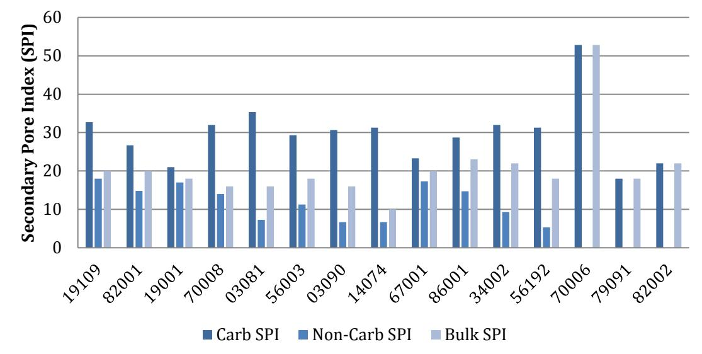
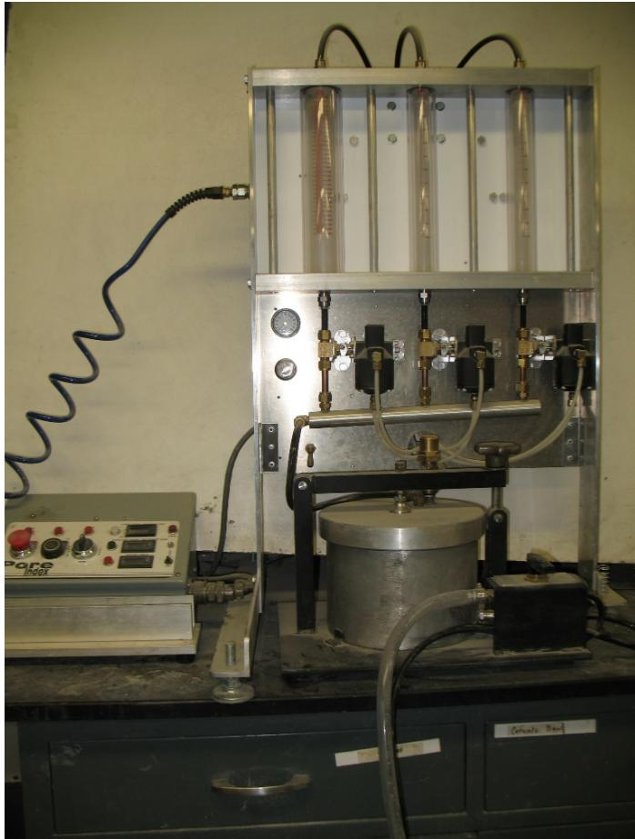
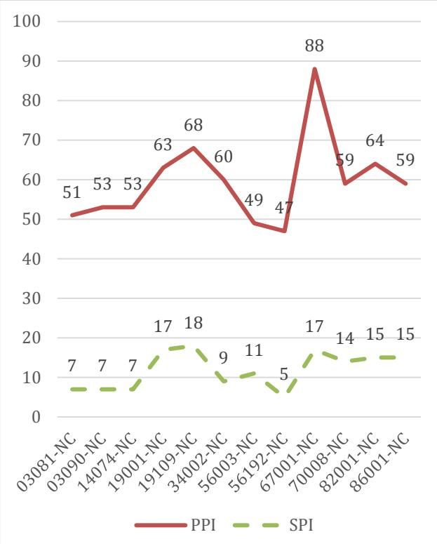
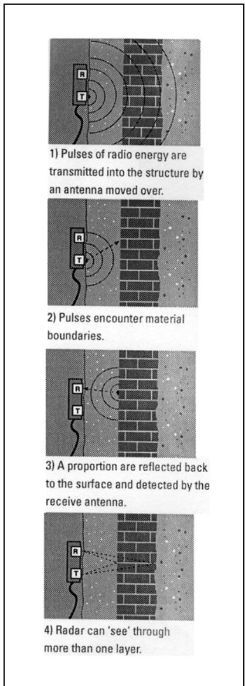

D-Cracking
D-cracking, also known as durability cracking, is a form of freeze-thaw distress in concrete pavements characterized by map-like or D-shaped cracks that typically initiate at joints. The phenomenon fundamentally requires three conditions: the presence of non-durable coarse aggregates with specific pore structures, a high degree of saturation within those aggregate pores, and repeated freezing-thawing cycles [3]. Mechanistically, water trapped inside vulnerable aggregate particles freezes and expands, generating hydraulic pressure and tensile stresses that fracture the aggregate and exert expansive forces on the surrounding cement paste [8] [11]. A primary driver of this internal damage is ice segregation, where advancing ice lenses create disjoining pressures that draw additional water via capillary action, causing micro-cracks to propagate under sustained cold conditions [4]. The susceptibility of an aggregate to D-cracking depends primarily on its porosity, permeability, and particle size distribution, with aggregates possessing high saturation levels and low resistance to moisture movement being most vulnerable [2] [3] [8].
Sources (14)
Key findings
- D-cracking resulted from a combination of marginal conditions, including locally saturated concrete, low air content, high water-to-cement ratios, aggressive deicing salting, and the use of susceptible aggregates [1].
- The dominant mechanism driving D-cracking was ice segregation rather than volumetric expansion, with damage occurring most severely when pore-throat sizes fell within a critical range of approximately 0.02 to 0.1 µm [4].
- Aggregates exhibiting high secondary Iowa Pore Index (IPI) values consistently showed pore-throat distributions concentrated in the critical size interval, making them highly vulnerable to ice-lens growth and subsequent cracking under sustained subfreezing temperatures [4].
- D-cracking was driven by hydraulic pressure from freezing water inside aggregates and by expelled water rupturing the surrounding paste, with these effects governed primarily by the aggregate’s pore structure and degree of saturation [7].
- A low absorption value combined with a high specific gravity reliably signaled a low Secondary Pore Index (SPI) and thus indicated good durability against D-cracking [7].
- Excessive secondary ettringite deposition filled the smallest air voids in the paste adjacent to joints, pushing the spacing factor parameter out of acceptable limits for freeze-thaw resistance [1].
- Silane and SoTa sealers maintained high relative dynamic modulus and limited scaling through extensive freeze-thaw cycling, whereas SME treatment reduced frost resistance in D-cracking-susceptible concrete [11].
- Transverse cracks in jointed reinforced-concrete pavements deteriorated rapidly when the concrete incorporated weaker aggregates such as slag or recycled concrete, requiring mixes to achieve strengths comparable to virgin-aggregate concrete [2].
D-Cracking Mechanisms and Aggregate Susceptibility
D-cracking is a form of freeze-thaw distress in concrete pavements characterized by map-like or D-shaped cracking, primarily initiated at joints [2] [11]. The underlying mechanism involves water trapped within vulnerable coarse aggregate particles freezing and expanding, which generates internal tensile stresses and hydraulic pressure that fracture the aggregate and damage the surrounding cement paste [3] [8]. Aggregate susceptibility is governed by pore structure characteristics, where specific pore-throat sizes facilitate ice lens formation through capillary water supply, making aggregates with high saturation potential and intermediate permeability most vulnerable to this deterioration [3] [4].
The ice segregation mechanism that drives this deterioration is illustrated in the following figure.
 Walder and Hallet 1985, Reproduced with permission of the Geological Society of America via Copyright Clearance Center the figure. Ice segregation mechanism [4]
Walder and Hallet 1985, Reproduced with permission of the Geological Society of America via Copyright Clearance Center the figure. Ice segregation mechanism [4]
The figure illustrates a cross-section of rock containing distinct zones: an unfrozen region at the bottom, a frozen fringe in the middle, and frozen rock near the top. It depicts water movement via arrows rising from the unfrozen zone into the frozen fringe to feed growing ice lenses within pores.
Research problem — The research addresses the challenge of identifying durable versus non-durable coarse aggregates to prevent premature pavement deterioration and costly repairs caused by freeze-thaw induced cracking [3] [7]. A key problem is determining whether current regulatory limits for aggregate properties are effectively preventing D-cracking or unnecessarily discarding viable materials while allowing susceptible aggregates to cause rapid joint deterioration [7]. The work seeks to resolve the ambiguity in critical pore-throat size ranges that trigger ice-segregation damage, aiming to establish a clearer criterion for predicting aggregate susceptibility and improving durability assessments [4].
The following figure illustrates the physical degradation of coarse aggregates resulting from these freeze-thaw conditions.
 Fraying after freezing-thawing cycles in the CSA A23.2-24A test (1/2 inch aggregate particles) [3]
Fraying after freezing-thawing cycles in the CSA A23.2-24A test (1/2 inch aggregate particles) [3]
The image displays a single, irregularly shaped coarse aggregate particle that has undergone significant surface degradation. The material exhibits extensive fraying and crumbling of its outer layers, revealing a rough, granular texture consistent with internal structural failure.
State of the art — Current industry practice relies on the Iowa Pore Index test to quantify primary and secondary pore loads, using an SPI threshold of 27 or higher to flag aggregates that cannot resist saturated freeze-thaw pressures [7]. Because no single laboratory test fully predicts field performance, the state of the art employs a suite of rapid tests including water absorption, specific gravity, and mineralogical analysis, combined with historical performance data to mitigate risk by limiting deleterious aggregate fractions to no more than 5% [7].
The following figure illustrates the results of the Iowa Pore Index test used to quantify secondary pore loads.

Secondary Pore Index (SPI) results for various coarse aggregate samples. [7]The figure displays a bar chart comparing the Secondary Pore Index (SPI) across different aggregate types, categorized into Carb SPI, Non-Carb SPI, and Bulk SPI. According to Iowa 219-D, a secondary load of 27 or greater indicates an inability of the aggregate to withstand saturated freeze-thaw pressures. The data illustrates that while most bulk aggregates meet durability standards, specific carbonate portions often exceed this threshold, which is a primary driver for D-cracking susceptibility.
Findings from the reports
- Identified that aggregates prone to D-cracking contain an excess of pores within a critical throat diameter range of approximately 0.02 µm to 0.1 µm, which facilitates ice segregation and subsequent cracking [4].
- Demonstrated that carbonate aggregates consistently exhibit higher water absorption, lower specific gravity, and elevated secondary pore index values compared to non-carbonate aggregates, with high SPI values signaling an inability to resist saturated freeze-thaw pressures [7].
- Established that D-cracking is driven by hydraulic pressure from freezing water inside aggregates and the rupture of surrounding paste by expelled water, with pore structure and degree of saturation serving as primary governing factors [7].
- Measured substantially higher mass loss in carbonate aggregates during freeze-thaw testing compared to durable non-carbonate aggregates across multiple standard test methods, confirming their inferior resistance to cyclic damage [3].
- Linked D-cracking directly to joint distress caused by secondary ettringite crystals infilling entrained air voids, which reduced air content and increased the spacing factor beyond limits for freeze-thaw resistance [1].
- Revealed that D-cracking emerges when multiple marginal conditions coincide, including locally saturated concrete, low air content, high water-to-cement ratios, aggressive deicing, and the presence of susceptible aggregates [1].
- Showed that applying penetrating sealers significantly increased the time required for concrete to reach critical saturation levels, thereby delaying the moisture conditions that trigger D-cracking [11].
Novelty & rigor — Research has introduced novel diagnostic methods that link D-cracking susceptibility to specific pore-throat size distributions and refined hydraulic fracture testing, moving beyond traditional modal diameter assessments [2] [4]. The Iowa pore index test has been uniquely correlated with detailed mercury intrusion porosimetry and standard freeze-thaw performance metrics to establish reliable screening thresholds for aggregate durability [3] [7]. A distinctive experimental approach involves engineering vulnerable concrete mixes to systematically evaluate penetrating sealers using desorption testing as a rapid proxy for moisture exchange mechanisms [11].
The following figure illustrates the Iowa Pore Index Apparatus and its control panel.

Iowa Pore Index Apparatus and Control Panel [7]The image displays the Iowa pore index apparatus, which consists of a control panel with gauges and valves connected to a vertical frame containing three graduated glass tubes. This device is used for the Iowa pore index test, an experimental method developed to evaluate aggregate durability by measuring the pore system characteristics that contribute to freeze-thaw deterioration. The apparatus provides a screening threshold for aggregate susceptibility to D-cracking, which is a form of freeze-thaw distress in concrete pavements characterized by map-like or D-shaped cracks.
Reported values
| Parameter | Value | Context | Source |
|---|---|---|---|
| entrained air void space percentage | 1.9% | Core sample #1 after infilling | [1] |
| entrained air void space percentage | 3.3% | Core sample #2 after infilling | [1] |
| entrained air void space percentage | 3.5% | Core sample #1 originally | [1] |
| entrained air void space percentage | 4.2% | Core sample #2 originally | [1] |
| mass loss | 2.3 percent | non-carbonate aggregates in unconfined freezing-thawing test after five cycles | [3] |
| mass loss | 4.5 percent | non-carbonate aggregates in unconfined freezing-thawing test using ASTM C666 conditioning after 50 cycles | [3] |
| mass loss | 6.3 percent | carbonate aggregates in unconfined freezing-thawing test after five cycles | [3] |
| mass loss | 9.9 percent | carbonate aggregates in unconfined freezing-thawing test using ASTM C666 conditioning after 50 cycles | [3] |
| pore-throat diameter | 0.02 to 0.1 µm | high secondary IPI values aggregates | [4] |
| pore-throat diameter lower limit | 0.004 to 0.1 µm | reported range for D-cracking (earlier work) | [4] |
| pore-throat diameter range | 0.02 to 0.1 µm | critical pore-throat size for D-cracking (study’s own data) | [4] |
| pore-throat diameter upper limit | 0.03 to 10 µm | reported range for D-cracking (earlier work) | [4] |
| coarse aggregate nondurable fraction | 15% | threshold for pavement D-cracking likelihood (Marks and Dubberke 1982) | [7] |
| expected durability factor (EDF) | < 25 | unsound aggregates / carbonate aggregates correlation with pore index > 30 | [7] |
| secondary pore index | 25 | bulk aggregates (except source 70006) | [7] |
7 more distinct values omitted here; the full span-verified set is in the quantities sidecar.
Across the reviewed reports, D-cracking is collectively established as a distress mechanism driven by hydraulic pressure and ice segregation within aggregates possessing specific pore structures, particularly those with critical pore-throat diameters between 0.02 µm and 0.1 µm that facilitate ice-lens growth. Carbonate aggregates are consistently identified as highly susceptible due to their higher water absorption, larger secondary pore index values, and greater mass loss in freeze-thaw testing compared to durable non-carbonate sources. The onset of D-cracking is further linked to a convergence of marginal conditions, including locally saturated concrete with compromised entrained-air systems caused by secondary ettringite deposition and the presence of aggregates exceeding specific durability thresholds such as an Iowa pore index of 27. [1] [3] [4] [7]
The following figure illustrates these mechanisms by showing frost damage associated with concrete aggregate, specifically depicting D-cracking at a pavement joint intersection alongside a fractured carbonate aggregate.
 Micrograph of fractured carbonate aggregate showing internal damage associated with freeze-thaw distress. [7]
Micrograph of fractured carbonate aggregate showing internal damage associated with freeze-thaw distress. [7]
The image displays a high-magnification view of an aggregate particle characterized by extensive, irregular internal fracturing that creates a network of voids within the material.
Implications — Specification criteria must shift from simple carbonate content limits to screening for pore structure characteristics, such as using the Iowa Pore Index and specific gravity thresholds, because durability is fundamentally linked to pore size distribution rather than chemical composition alone [7]. Aggregates with pore throats in the critical sub-micron range should be excluded from use, as these specific geometries facilitate ice segregation pressures that drive cracking more severely than general volumetric expansion [4]. Designers must ensure a robust air-void system and effective joint drainage to prevent secondary ettringite from infilling voids, which otherwise compromises freeze-thaw resistance even in mixes that initially met durability standards [1]. Maintenance strategies should prioritize hydrophobic pore-liner sealers over pore-blocking treatments to mitigate damage amplification, and desorption testing should replace air-permeability methods for diagnosing susceptibility in existing pavements [11].
The following figure illustrates how pore size distributions and Iowa Pore Index values correlate with non-carbonate volumes to highlight these critical durability factors.

Comparison of Trends of Pore Size Distributions and Iowa Pore Index with Pore Size Volumes of Non-Carbonates (left) and Iowa Pore Indices of Non-Carbonates (right) [7]The figure displays a line chart comparing the Iowa Pore Index (PPI) and the Specific Gravity Index (SPI) for various non-carbonate aggregate samples.
Limitations — The specific pore-size range that most controls freeze-thaw durability remains unidentified, preventing definitive predictions of aggregate susceptibility based solely on secondary pore indices [7]. Methodological constraints limit the assessment of aggregate susceptibility because critical pore-throat size ranges are poorly defined and single-pressure testing cannot distinguish between different porosity types or capture varying water-intrusion rates across rock types [4]. Reliance on modal pore-throat diameters may overlook harmful pores that are not the most abundant, and excluding low-abundance aggregate fragments leaves their potential impact on pavement performance unquantified [4].
Evidence: 7 reports (5 primary)
Detection And Mitigation Of D-Cracking
Research problem — Current models for predicting transverse and longitudinal fatigue cracking in jointed plain concrete pavements lack the accuracy needed to reliably forecast crack deterioration over time, leading to premature rehabilitation costs and reduced safety [10]. The close spacing and hairline nature of D-cracking make it difficult to detect through standard visual inspections, creating a risk that material-related distress is misidentified or missed entirely during maintenance planning [6]. Agencies hesitate to use recycled concrete aggregates from pavements with prior D-cracking due to concerns that underlying durability issues may compromise the long-term performance of new mixes, limiting sustainable construction options [14].
State of the art — Detection practices have evolved from traditional manual visual inspections of surface cracks to augmented methods using automated video capture and image analysis, while ground-penetrating radar has become the preferred nondestructive tool for identifying subsurface cracking [6]. Mitigation strategies primarily focus on aggregate selection with reduced maximum coarse aggregate size, mix-design optimization involving supplementary cementitious materials and controlled alkali content, and enhanced subbase drainage systems [2]. Although predictive modeling tools like HIPERPAV are routinely used during design to flag cracking risk, their reliability is mixed, prompting ongoing efforts to refine sensitivity analyses for better accuracy [2].
Findings from the reports
- Found that transverse cracks in jointed reinforced-concrete pavements deteriorate significantly faster than anticipated when concrete incorporates weaker aggregates such as slag or recycled concrete [2].
- Demonstrated that mixes using weaker aggregates must achieve strengths comparable to virgin-aggregate concrete and require reduced stresses at joints and cracks to control rapid D-cracking [2].
- Showed that the presence of D-cracking in source concrete is not an insurmountable barrier to using recycled concrete aggregate (RCA) in new paving mixtures when appropriate mitigation measures and engineered mix designs are applied [14].
- Observed map-shaped cracking on overlays, particularly in Pottawattamie County projects, which was interpreted as D-cracking caused by poor aggregate durability or alkali-silica reaction [5].
- Identified D-cracking-like distresses as part of broader material-related failures and attributed them more to project-specific material and construction shortcomings than to inherent design flaws such as joint spacing [5].
Novelty & rigor — The research introduces ground-penetrating radar as a primary in-situ tool for detecting D-cracking, providing a faster and less subjective alternative to traditional visual surveys or core extraction by revealing subsurface cracks without traffic disruption [6]. Reproducibility of the assessment is supported by standardized protocols that utilize either trained observers applying specific severity ratings or automated video analysis systems to quantify crack characteristics consistently [6].
The following figure illustrates the underlying principle of ground-penetrating radar technology used in this assessment.

Diagram Explaining the Principal behind Ground Penetrating Radar (from ref. 22) [6]The figure illustrates a four-step process of ground penetrating radar, showing pulses of radio energy transmitted into a structure by an antenna. It depicts how these pulses encounter material boundaries and are reflected back to the surface where they are detected by the receive antenna.
Mitigation strategies emphasize achieving high mix strengths comparable to virgin aggregates and reducing joint stresses, while also demonstrating that recycled concrete aggregate from D-cracked sources can perform acceptably through engineered mix designs,. [2] [14]
Implications — Modeling tools should be treated as early-warning indicators rather than definitive predictors, requiring intensified environmental monitoring and adaptive sawing schedules to mitigate cracking risks [2]. Specifications must evolve to allow recycled aggregate from D-cracked sources when accompanied by rigorous quality control and mix design adjustments, supported by targeted training for industry stakeholders [14].
Limitations — Current specifications often restrict recycled concrete aggregates with a history of D-cracking by requiring them to meet virgin aggregate standards, despite evidence that proper mitigation can make such materials viable [14]. Conclusions regarding the impact of D-cracking on performance remain tentative due to limited site data and a lack of systematic durability measurements in field reviews [5]. Predictive models may over- or under-predict cracking because they do not fully account for practical field variables such as delayed joint sawing, early strength development rates, and subbase friction [2].
Evidence: 5 reports (3 primary)
Related concepts
In this hierarchy
- Parent: Materials-Related Distress (MRD)
- Sibling: Alkali-Silica Reaction
- Sibling: Ettringite Fill
- Sibling: Premature Joint Deterioration
- Sibling: Sulfate Attack
Related by shared evidence
- Freeze-Thaw Durability — shares 11 reports
- CP Tech Center Reports — shares 10 reports
- Alkali-Silica Reaction — shares 9 reports
- Air Entraining Agent — shares 8 reports
- Concrete Materials & Mixtures — shares 8 reports
- Degree of Saturation — shares 8 reports
- Durability & Materials-Related Distress — shares 8 reports
- Concrete Pavement Joint — shares 7 reports
Similar topics
- Carbonate Aggregate
- Materials-Related Distress (MRD)
- Durability & Materials-Related Distress
- Joint Deterioration Prevention
- Freeze-Thaw Durability
- Deicing Salt Effects
- Premature Joint Deterioration
- Degree of Saturation
References
- P. Taylor, L. Sutter, and J. Weiss, "Investigation of Deterioration of Joints in Concrete Pavements," National Concrete Pavement Technology Center, Ames, IA, Rep. TPF-5(224), 2012. [Online]. Available: https://www.intrans.iastate.edu/wp-content/uploads/2018/03/joint_deterioration_penetrating_sealers_field_study_w_cvr.pdf
- J. Grove, G. Fick, T. Rupnow, and F. Bektas, "Material and Construction Optimization for Prevention of Premature Pavement Distress in PCC Pavements," National Concrete Pavement Technology Center, Ames, IA, Rep. TPF-5(066), 2008. [Online]. Available: https://www.intrans.iastate.edu/wp-content/uploads/2018/03/mco-final.pdf
- F. Bektas, W. Cai, and K. Wang, "Aggregate Freezing-Thawing Performance Using the Iowa Pore Index," Center for Transportation Research and Education, Ames, IA, 2016. [Online]. Available: https://www.cptechcenter.org/wp-content/uploads/2018/03/aggregate_freezing-thawing_using_Iowa_pore_index_w_cvr.pdf
- F. Hasiuk, M. F. A. Ridzuan, and P. Taylor, "Calibrating the Iowa Pore Index with Mercury Intrusion Porosimetry and Petrography," Institute for Transportation, Ames, IA, Rep. InTrans Project 15-553, 2017. [Online]. Available: https://www.intrans.iastate.edu/wp-content/uploads/2018/03/Iowa_pore_index_calibration_w_cvr.pdf
- J. Gross, D. King, D. Harrington, H. Ceylan, Y. A. Chen, S. Kim, P. Taylor, and O. Kaya, "Concrete Overlay Performance on Iowa's Roadways (Field Data Report)," National Concrete Pavement Technology Center, Ames, IA, Rep. TR-698, 2017. [Online]. Available: https://www.intrans.iastate.edu/wp-content/uploads/2017/09/Iowa_concrete_overlay_performance_w_cvr.pdf
- S. Schlorholtz, B. Dawson, and M. Scott, "Development of In Situ Detection Methods for Materials-Related Distress (MRD) in Concrete Pavements: Phase 1," Center for Portland Cement Concrete Pavement Technology, Iowa State University, Ames, IA, Rep. CTRE 00-96, 2003. [Online]. Available: https://www.intrans.iastate.edu/wp-content/uploads/2018/03/mrd.pdf
- F. Bektas, K. Wang, and J. Ren, "Carbonate Aggregate in Concrete," Institute for Transportation, Ames, IA, 2015. [Online]. Available: https://www.intrans.iastate.edu/wp-content/uploads/2018/03/201514.pdf
- P. Taylor, F. Bektas, E. Yurdakul, and H. Ceylan, "Optimizing Cementitious Content in Concrete Mixtures for Required Performance," National Concrete Pavement Technology Center, Ames, IA, 2012. [Online]. Available: https://www.intrans.iastate.edu/wp-content/uploads/2018/03/taylor_ocm_w_cvr2.pdf
- W. J. Weiss and L. Montanari, "Guide Specification for Internally Curing Concrete," National Concrete Pavement Technology Center, Ames, IA, Rep. TPF-5(286), 2017. [Online]. Available: https://www.intrans.iastate.edu/wp-content/uploads/2018/09/IC_guide_spec_w_cvr.pdf
- D. Harrington, R. Rasmussen, D. Merritt, T. Cackler, and P. Taylor, "Long-Term Plan for Concrete Pavement Research and Technology—The Concrete Pavement Road Map (Second Generation): Volume II, Tracks (FHWA-HRT-11-070)," National Center for Concrete Pavement Technology, Iowa State University, Ames, IA, 2012. [Online]. Available: https://www.fhwa.dot.gov/publications/research/infrastructure/pavements/pccp/11070/11070.pdf
- J. T. Kevern, G. Adil, P. Taylor, S. Sadati, and K. Wang, "Evaluation of Penetrating Sealers for Concrete," National Concrete Pavement Technology Center, Iowa State University, Ames, IA, Rep. TR-765, 2022. [Online]. Available: https://www.intrans.iastate.edu/wp-content/uploads/2022/06/concrete_penetrating_sealers_eval_w_cvr.pdf
- D. White and P. Vennapusa, "Optimizing Pavement Base, Subbase, and Subgrade Layers for Cost and Performance on Local Roads," Concrete Pavement Technology Center and Center for Earthworks Engineering Research, Ames, IA, Rep. TR-640, 2014. [Online]. Available: https://www.intrans.iastate.edu/wp-content/uploads/2018/03/local_rd_pvmt_optimization_w_cvr.pdf
- H. Ceylan, K. Gopalakrishnan, and S. Kim, "Rehabilitation of Concrete Pavements Utilizing Rubblization and Crack and Seat Methods (Phase II): Performance Evaluation of Rubblized Pavements in Iowa," CTRE, Iowa State University, Ames, IA, Rep. TR-550, 2008. [Online]. Available: https://www.intrans.iastate.edu/wp-content/uploads/2018/10/rubblization_pavements.pdf
- S. Garber, R. Rasmussen, T. Cackler, P. Taylor, D. Harrington, G. Fick, M. Snyder, T. Van Dam, and C. Lobo, "A Technology Deployment Plan for the Use of Recycled Concrete Aggregates in Concrete Paving Mixtures," National Concrete Pavement Technology Center, Ames, IA, 2011. [Online]. Available: https://www.intrans.iastate.edu/wp-content/uploads/2018/03/RCA-Draft-Report_final-ssc.pdf
Feedback on this page